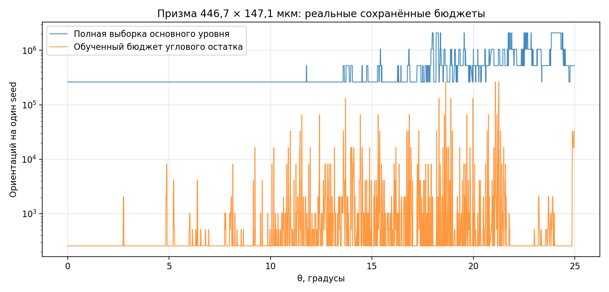
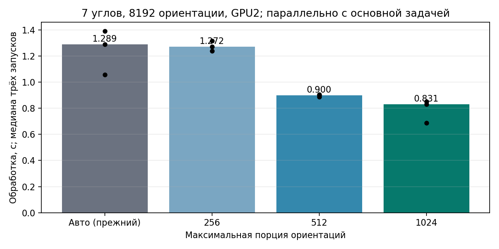

15 октября 2026. Мини-мануал · Полная методичка.
θ — угол рассеяния; Ω — ориентация частицы; F(θ,Ω) — матрица для одной ориентации. M(θ)=E[F(θ,Ω)] — искомое ориентационное среднее. Все формулы применяются к каждому из 16 элементов матрицы Мюллера. I — прежний локальный кубический интерполятор: его веса при замороженной опорной сетке постоянны, поэтому он линеен по значениям матрицы.
Δ(θ,Ω) = F(θ,Ω) − I[F(опорные θ,Ω)] Для каждой из восьми независимых реплик: M̂(θ) = I[M̂_N(опорные θ)] + mean_n Δ(θ,Ω). E[M̂(θ)] = I[M(опорные θ)] + M(θ) − I[M(опорные θ)] = M(θ).
Первая часть использует полную независимую выборку на опорных углах. Вторая использует уменьшенную выборку, общую для проверяемого угла и всех узлов его интерполяционного шаблона. Близкие колебания сокращаются в разности. Полная и остаточная части могут иметь общие префиксы Sobol: их ковариация сохраняется при сборке восьми целых реплик. Раздельные доверительные интервалы этих частей не складываются.
Размеры выборок остатка назначаются только по восьми основным, уже посчитанным репликам. Контроллер оценивает дисперсию разности каждого уровня глубины и каждого интервала θ, проверяет все элементы и линейную вариацию нормированных отношений. Прогноз N строится по зависимости дисперсии примерно 1/N, округляется вверх до степени двойки, ограничивается исходным N; нижний рабочий предел — min(исходное N,256). Если внутри интервала нет обучающей точки, сохраняется исходное N. Это эвристика распределения работы, которую затем проверяет независимый аудит.
План фиксируется до независимой проверки. Её восемь seed не используются для обучения. Изменять N по результатам этой же проверки запрещено. При провале применяется полный прямой аудит с новым набором seed. Повторный запуск восстанавливает незавершённую проверку с её сохранённым планом и seed.
После сборки проверяются все 16 элементов и отношения Mij/M11. Для отношений используются ковариационные интервалы Fieller; отношение формируется после усреднения матриц. Проверяются также выходная интерполированная сетка и расхождение с основным расчётом. Допуск интерполяции равен четверти fullauto: при --fullauto 0.02 он составляет 0,005, то есть 0,5%. Оценки Student-t по восьми репликам остаются поточечными статистическими оценками; одновременная гарантия 95% для всей сетки не заявляется.
Численные результаты проверок и профилей.
На сохранённых данных призмы 446,7 × 147,1 мкм, λ=0,532 мкм, m=1,3116 проверены 3592 сохранённые матрицы без новых оптических вычислений. У задачи 1967 опорных и 5574 проверяемых угла. Прогноз суммарного времени native-работ остаточной схемы равен 0,309 времени прямой схемы: потенциально 3,23× на этой части. Это модель затрат по производственным профилям, а не измеренное ускорение всего fullauto или срок завершения. Стоимость сборки файлов, конкуренция на сервере и возможный прямой повтор могут уменьшить выигрыш.

Равенство остаточной и прямой оценок при одинаковых N проверено на призме, несимметричном тетраэдре, поглощающей и вогнутой частицах и в некогерентном режиме: расхождения порядка 10⁻¹⁷ на CPU. Отдельный тест CUDA дал 7,2·10⁻¹⁸. Полный расчёт при fullauto 2% прошёл независимую проверку: статистическая оценка 1,028%, оценка отношений 0,355%, интерполяции 0,243%. Независимый Python-аудитор заново собрал матрицы из native-файлов и подтвердил критерии.
Принудительное прерывание полного расчёта посреди независимого аудита сохранило 696 готовых блоков, план и seed; восстановление завершилось успешно. При искусственно недостижимом допуске подтверждён переход от остатка к прямому аудиту на следующем независимом наборе.
n — максимальное число внутренних отражений. Для поддерживаемой геометрии одна трассировка до n+2 сохраняет обе матрицы: на глубине n и n+2. Дифракция и когерентное суммирование для каждой глубины выполняются отдельно. Восемь пар используют одинаковые ориентации. Это сохраняет физический смысл проверки и сокращает повторную трассировку. Общий путь применяется при автоматическом поиске глубины и на финальной проверке. Если режим не поддерживает общую трассировку или задано --fullauto-depth-sharing off, используются отдельные расчёты. Явный --max-reflections N продолжает фиксировать глубину.
На CPU проверены отдельные и парные матрицы глубин 8 и 12 для призмы, тетраэдра и поглощающего параллелепипеда. Все 16 элементов совпали до 5,8·10⁻¹⁶; выигрыш коротких контрольных запусков 1,24–1,56×. Эти значения не являются прогнозом ускорения всего fullauto.
Для CUDA PO с конвейером подготовки, автоматическими ресурсами, не менее 2048 ориентаций и не более восьми θ контроллер проверяет ограничение порции подготовки до 1024 ориентаций. Порция — буфер между CPU и GPU, а не число опорных θ и не полное число ориентаций. Два парных пилота проверяют все элементы и отношения; кандидат включается только при расхождении не выше min(10⁻⁷,ε/1024) и измеренном выигрыше более 3%. Проверка сохраняется для версии бинарника и класса задачи. Явное --orientation-chunk и --fullauto-resources off имеют приоритет.

12 отдельных запусков реального пакета призмы 501,2 мкм на GPU2 дали совпадение всех элементов и отношений до 1,2·10⁻¹⁵. Замеры проводились одновременно с рабочими расчётами. Дополнительная проверка в постоянном worker подтвердила совпадение до 7,8·10⁻¹⁶. Обучающие пилоты имеют разовую стоимость: первый короткий вызов может оказаться медленнее; их выигрыш окупается на повторяющихся пакетах. Назначение 16 ядер само по себе не гарантирует полной загрузки CPU или GPU; цель — сокращение времени при прежних критериях.
mbs-fast --method po --backend cuda --particle 1 446.7 147.1 \ --ri 1.3116 0 --wavelength-um 0.532 --fullauto 0.02 \ --fullauto-theta-range 0 25 --fullauto-gpus 0 \ --output NEW_DIRECTORY --close
| Параметр | Поведение |
|---|---|
| --fullauto-audit-angular auto | По умолчанию. При полном независимом бюджете использует остаток, если прогноз native-затрат обещает экономию минимум 10%. При недостаточных профилях оставляет прямой аудит. |
| --fullauto-audit-angular on | Принудительно выбирает полные независимые опорные выборки и обученный остаток. Для тестирования; все критерии и прямой повтор остаются. |
| --fullauto-audit-angular off | Прежний прямой независимый аудит. |
| --fullauto-short-packets auto|off | По умолчанию auto. Разрешает либо отключает проверяемое уменьшение порции для коротких пакетов. |
| --fullauto-depth-sharing on|off | По умолчанию on для поддерживаемого когерентного PO. Проверяемая общая трассировка глубин. |
| --fullauto-dispatch-threads 16 | Ручной размер пулов подготовки и аналитического среднего в CUDA PO. Нельзя совмещать с явными --threads, --po-prepare-threads, --analytic-mean-threads. |
Аудит углового остатка работает и на произвольной форме: симметрия не требуется. GO использует свою схему; этот флаг для GO не принимается. Флаги симметрий, phi, cutoff и фиксированной глубины сохраняют прежний приоритет.
angular_audit_plan.json содержит решение и прогноз стоимости; angular_audit_training.csv — обучающие дисперсии и выбор N; angular_audit_budget.csv — замороженные бюджеты; angular_audit_groups.json и angular_audit_sources.tsv — шаблоны и источники частей оценки; angular_audit_support.csv — опорные углы. independent_audit_reservation.tsv резервирует независимые seed; independent_audit_progress.json показывает стадию. В replicas/validation_evaluated_seed*.dat сохранены восемь собранных матриц; native-блоки всех частей остаются в jobs. Критерии и исходы каждого независимого набора записываются в independent_final_validation_serial*.json. Проверки порции — short_packet_validation_*.json, фактический chunk — в worker_start и command.args.
python3 /PATH/TO/RELEASE/source/scripts/replay_fullauto.py /ABSOLUTE/RESULT_DIRECTORY
Используйте сохранённую команду и исходный каталог. Не добавляйте новые управляющие флаги к старому checkpoint произвольно: они входят в отпечаток команды. При обновлении бинарника применяется только проверенное совместимое восстановление с исходным выпуском. Если новая стратегия требует другого независимого набора, прежние основные блоки сохраняются, но старый аудит не выдаётся за новую независимую проверку.